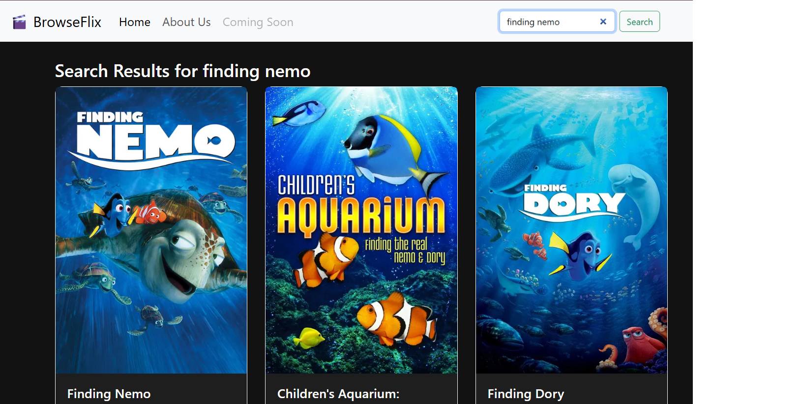

Overview
BrowseFlix is a web application designed to help movie enthusiasts discover and learn more about films. Built with React, this project demonstrates my ability to create dynamic, responsive web applications that interact with third-party APIs. I developed this as a personal project to strengthen my front-end development skills and create a practical tool that solves the common problem of finding information about movies quickly and efficiently.
Features
- Dynamic Search Functionality: Users can search for movies in real-time, with results updating as they type
- Responsive Movie Cards: Search results display in a grid of movie cards showing poster images and titles
- Detailed Movie Views: Clicking on a movie card reveals a dedicated page with comprehensive information including synopsis, backdrop image, and poster
Technical Implementation
- React Framework: Built with functional components and React Hooks (useState, useEffect) for state management
- API Integration: Connected to TMDB API for fetching movie data with dynamic search parameters and movie details
- Responsive Design: Used Bootstrap combined with custom CSS for a mobile-friendly interface
← Back to Projects